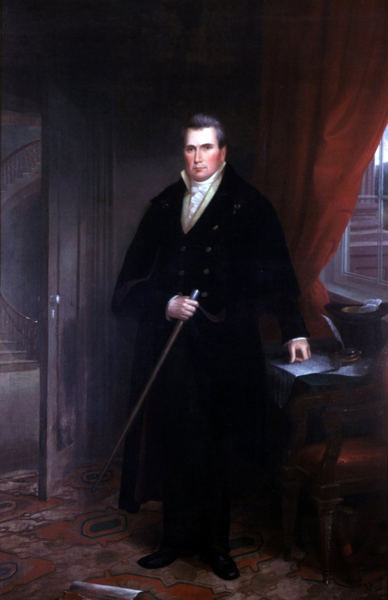

Governor John Clark
John Clark (February 28, 1766-October 12, 1832), whose surname also appears as Clarke, was a Revolutionary-era militia officer, planter, state legislator, factional leader, and governor of Georgia from 1819 through 1823. He came to office after two failed campaigns, won reelection by two legislative votes, and lost Georgia's first popular gubernatorial election by 683 votes. His administration funded schools and internal improvements, distributed land taken from the Muscogee people, and appointed General John Coffee and Thomas S. Swain to supervise the road that became the southern part of Coffee Road.[1][2][3]

Portrait of John Clark from the Georgia State Capitol collection. The New Georgia Encyclopedia credits the Georgia Capitol Museum, University of Georgia Libraries. Smithsonian catalog records identify the Georgia State Capitol as the owner. A reported attribution to William R. Freeman and a date of 1858 remain provisional because the full catalog entry was not accessible during this research.[4][5]
Clark's government helped turn a large 1821 Creek land cession into lottery property for white settlers. It also sold some captive Africans who had been seized by a United States officer and delivered to Georgia, then retained or otherwise disposed of others. Their ownership became the subject of long federal litigation. Those people were held by the state, not proved to be Clark's personal property, but Clark acted for Georgia in the case and signed the state's acknowledgment of custody.[6][7]
Name and identity
The governor used John Clark. Georgia's 1821 Senate journal prints that spelling in his messages and reelection record, and contemporary newspapers often did the same. Clarke was also common, especially in references to the Clarke family and political faction. This dossier uses John Clark for the governor, preserves Clarke when a source does, and follows the conventional spelling Elijah Clarke for his father.[2][8]
He had no verified middle name or initial. He should not be confused with Delaware governor John Clark, whose National Governors Association page is a separate record. Georgia's Clark was born in North Carolina in 1766, served in the Georgia militia, lived in Wilkes and Baldwin counties, governed Georgia, and spent his last years at St. Andrew's Bay in West Florida.[1][9]
Family and childhood
The New Georgia Encyclopedia identifies Clark as the eldest son of Elijah Clarke and Hannah Arrington, whose surname sometimes appears as Harrington. It gives his birth as February 28, 1766, in Edgecombe County, North Carolina. The family moved in the early 1770s to Georgia's Ceded Lands, later Wilkes County. No birth register or family Bible was located online, so the exact birth details rest on consistent institutional biography rather than an inspected original record.[1]
Clark married Nancy Williamson, also called Ann in a contemporary death notice, on a reported date of December 24, 1792. Compiled family research identifies her parents as Micajah Williamson and Sarah Gilliam. The marriage date and parentage were not confirmed from an original marriage record during this project.[1][10]
The number of children needs careful wording. A compiled genealogy reports six births. The original family monument, as later transcribed, says it was erected by the couple's surviving children, Ann W. Campbell and Wiley P. Clark. That wording proves two surviving children, not only two births. The full six-child list remains derivative until a family Bible, probate packet, or original vital records are inspected.[10][11]
Revolutionary and militia service
Clark returned from school in North Carolina to join his father's patriot militia during the American Revolution. The current scholarly biography places him at Kettle Creek, Augusta, and Musgrove Mill and says he reached the rank of captain at sixteen. It also says Georgia later granted him 800 acres for his service.[1]
The general outline of service under Elijah Clarke is strong, but no muster roll, commission, bounty warrant, or pay record naming the younger Clark was located online. The named battles, teenage captaincy, and 800-acre reward should therefore remain attributed to the institutional biography rather than presented as independently proved by this search.
His later senior militia rank is firmer. An 1803 newspaper notice called him Major General John Clarke. That contemporary usage proves that he was publicly recognized by the rank by then. The commonly reported 1796 promotion date and his part in the 1787 fight at Jack's Creek were not traced to an original commission or battle report.[12]
Institutional biographies and a service marker at Clark's present grave identify him as a War of 1812 veteran. No qualifying orders, roster, or service file was located, so this dossier does not assign him a specific command or campaign.[9][11]
Planter, landholder, and Woodville
Clark became a substantial landholder and planter. The National Governors Association says he acquired broad Georgia holdings through the controversial Yazoo Act, while the New Georgia Encyclopedia says he was implicated in the Yazoo Land Fraud. Neither source, by itself, proves a criminal act by Clark, and no transaction file or court record tying him to a specific Yazoo purchase was located. Near Milledgeville he lived at Woodville, later called the Clark-Bentley House. A National Register nomination dates the house to about 1818 or 1819 and quotes an 1834 sale advertisement describing a seven-room dwelling with a wide central passage and 450 adjoining acres that Seaton Grantland had bought from Clark.[1][9][13]
The nomination also records a visitor's 1820 description of the governor's good house a few miles from Milledgeville. Woodville survives as direct evidence of Clark's plantation residence, but it is not a complete inventory of his property. No full deed sequence, tax digest, will, or probate inventory was inspected.[13]
Modern biographies consistently call Clark a planter and slaveholder. An 1820 Baldwin County index includes a John Clark household, but the original schedule and its enslaved-person columns were not recovered in readable form. No defensible count of the people Clark personally enslaved can be given from the evidence inspected here.[1][14]
Entry into politics
Clark was serving in the Georgia legislature by 1801. A statement published at his request that year begins, "When I entered upon this floor in a Legislative capacity," and the newspaper identifies him as General John Clark. Later institutional accounts place him in the Georgia House from 1801 through 1803, followed by service in the state Senate and as a presidential elector in 1816. The 1801 legislative service is direct; exact terms for every later state office were not reconstructed from original rosters.[9][15]
The National Governors Association also credits Clark with service as Wilkes County sheriff from 1789 through 1792, appointment to the 1803 commission that laid out Milledgeville, election to the state Senate in 1804, and support for the constitutional change that moved gubernatorial elections from the legislature to the voters. These details were not independently confirmed in county records, commission proceedings, legislative rosters, or constitutional journals during this project, so they remain attributed secondary claims rather than fixed points in the chronology.[9]
Georgia politics in Clark's era revolved around personal coalitions before stable modern parties existed. Clark led a faction associated with North Carolina migrants, newer settlements, and frontier districts. William Harris Crawford and later George Troup led the opposing alignment, which drew heavily from Virginia migrants and older, wealthier districts. Geography, migration, kinship, patronage, and personal loyalty all mattered. The contest should not be reduced to a simple poor-against-rich division.[1][16]
Duels and political violence
The factional struggle became violent. Modern institutional and historical accounts agree that Crawford killed Clark ally Peter Van Allen in an 1802 duel; Clark wounded Crawford in an 1806 duel; and Clark, angry when Crawford refused another challenge, attacked Judge Charles Tait with a riding crop in Milledgeville. Clark was reportedly fined $2,000 for the assault.[1][16]
No duel correspondence, court docket, or fine judgment was located online. The sequence is supported by consistent secondary accounts, but details should not be embellished. Older writers often substituted moral judgments for evidence when describing Clark. Their labels are not facts about his character.
Campaigns and elections
Clark lost campaigns for governor in 1813 and 1817. He finally defeated Troup in the General Assembly's 1819 joint ballot. A contemporary Savannah report gives the vote as Clark 75 and Troup 62, a thirteen-vote margin.[1][17]
He defeated Troup again in 1821. The official Senate journal records Clark's reelection and inauguration, while a contemporary newspaper reports the tally as Clark 74 and Troup 72. A governorship decided by two legislators shows both Clark's strength and the state's nearly even factional balance.[2][18]
Clark did not seek a third consecutive term in 1823. Troup succeeded him after defeating Clark-faction candidate Matthew Talbot. Two years later Clark faced Troup in Georgia's first popular election for governor. Official returns published at the time gave Troup 20,545 votes and Clark 19,862. Clark lost by 683 votes out of more than 40,000 cast and then left active Georgia politics.[19]
Creek land policy and the 1821 cession
The Treaty of Indian Spring signed January 8, 1821, ceded a large tract of Muscogee land between the Ocmulgee and Flint river systems. Clark did not negotiate or sign that treaty. The federal commissioners were Daniel M. Forney and David Meriwether. Georgia's commissioners were I. McIntosh, David Adams, Daniel Newnan, and William McIntosh.[20][21]
Clark's role was still substantial. Before the treaty, his administration selected Georgia commissioners and prepared for negotiations. An original July 1820 letter from David Adams accepts Clark's appointment to the state commission and discusses a planning meeting with General McIntosh.[21]
After the cession, Georgia's 1821 acts explicitly placed treaty land into the lottery system, regulated fraudulent draws and grants, and organized new counties. Clark's government therefore helped convert Creek land into private settler property even though federal and state commissioners other than Clark negotiated the agreement.[20][22]
The New Georgia Encyclopedia says Muscogee people called Clark "E-cun-naw-au-po-po-hau", translated as "always asking for land," because he repeatedly sought more cessions. That translation was not traced to a contemporary Muscogee-language source. The broader policy is clear: Clark used state power to press for Native land and distribute it to settlers. The later 1825 Treaty of Indian Springs and forced removal occurred after his term, but his administration belonged to the same longer Georgia campaign to extinguish Native title.[1]
Clark also pursued a Cherokee cession. In January 1823 state commissioners James Blair and Thomas Glascock wrote him from the Cherokee Agency about efforts to assemble Cherokee leaders for negotiations. Their letters show Clark's government promoting further land negotiations, though the mission did not produce a cession during his tenure.[23]
Schools, the university, and internal improvements
Clark's 1821 message to the legislature made education and internal improvement stated priorities. The session laws give the exact scale. An act approved December 21, 1821 created a $500,000 school fund, divided between free schools and county academies, and a separate internal-improvement fund whose listed bank-stock principal also totaled $500,000. The principal was to remain intact while interest supported future programs.[2][22]
The same session provided the University of Georgia at least $8,000 annually and directed $25,000 from specified land proceeds toward a new building in Athens. In 1822 the legislature supplied $12,000 for poor-school distribution among counties according to the number of children ages eight through eighteen and separately provided academy funding.[22][24]
These measures were substantial, but they operated within the state's land and bank-stock economy. Public education funding and Native land distribution were not separate stories. Georgia built parts of its institutional program while transferring Indigenous land into settler ownership.
Savannah fire relief
The great Savannah fire of January 11, 1820 destroyed much of the city. The New Georgia Encyclopedia says Clark provided Savannah $10,000 from the state treasury. The official 1820 acts inspected for this project prove tax remission on burned property, validation of rebuilding measures, and a legislative expression of sympathy, but they do not contain the claimed $10,000 cash appropriation.[1][25]
The payment may have come through an executive advance or another record, but no warrant or appropriation was located. The reliable conclusion is that Clark and the legislature provided tax and legal relief. The $10,000 payment remains an unresolved secondary claim.
Coffee Road appointment
Clark's connection to Barney history is direct. On December 23, 1822, he assented to the act authorizing a public road from the Alapaha River at or near Cunningham's Ford through specified Irwin and Early County land districts to the Florida line near the Ochlocknee River. The law appropriated $1,500 and told the governor to appoint two supervisors.[24]
An official report published the next year identifies his appointees. On December 24, 1822, Clark issued an executive order naming General John Coffee and Thomas S. Swain of Telfair County. Work began in August 1823 and ended November 15. The report described nearly ninety miles of road, about seven additional miles needed to reach a suitable Alapaha crossing, bridges, and four ferry flats.[26]
The same report exposes weak administration. Clark's file contained no instructions, contract, performance bond, or accounting method. Coffee received the full $1,500, but legislators could not determine from the executive records how it had been spent or adequately judge the work. They ordered a detailed report. Coffee sent a letter and accounts in 1824, but another committee found the information still insufficient and asked the governor to investigate. Neither report accuses Clark, Coffee, or Swain of theft.[26][27]
Clark's order did not create a road through the future Barney town site. The statutory project began at the Alapaha. Coffee Road later became the name for a longer corridor, and near Barney the Folsom Bridge corridor lay about 2.5 miles east/south-east of the future town.[28][29]
State custody and sale of enslaved Africans
The litigation commonly called Governor of Georgia v. Madrazo and Ex parte Madrazzo arose from the transatlantic slave trade. A Spanish vessel carried captive Africans from Africa toward Havana in 1817. After seizure, resale, and movement through Amelia Island and Creek country, 95 people entered Georgia custody under laws against illegal importation.[6][7]
Georgia sold part of the group without a judicial decree and placed about $40,000 in proceeds in the state treasury. Twenty-seven or thirty others remained in state or official custody or were otherwise disposed of. Clark, acting as governor, filed a federal proceeding in 1820 on Georgia's behalf and later signed an acknowledgment that the governor held the remaining people subject to competing court claims.[6][7]
The United States Supreme Court ultimately held that federal courts could not entertain the requested suit against Georgia in the form presented. The case turned on jurisdiction and state sovereign immunity, not a finding that Georgia's sale was morally or factually justified.[6][7]
Some modern summaries call the 95 people "Clark's slaves." The case reports do not support that wording. They describe custody, sale, proceeds, and claims of the state of Georgia. This litigation is evidence of Clark's official role in a state system that treated human beings as property. It is not a personal slave inventory.[6][7]
Florida years and federal work
A contemporary obituary says Clark moved to West Florida in 1827 and settled at St. Andrew's Bay. This date is stronger than later memorial accounts that give 1825. The cost of establishing himself there reportedly led him back into public work.[9][10]
The same obituary says he accepted appointment as an agent for the protection of live oak, a federal naval resource. He was carrying out that work on St. Vincent Island when he became ill. Later institutional biographies call him Keeper of the Public Forests and a United States Indian agent under President Andrew Jackson.[1][9][10]
The live-oak agency is supported by the contemporary notice. The Indian-agent title is strong secondary evidence, but no commission was located. The chronology also requires care. Jackson did not become president until 1829, so a Jackson appointment could not have sent Clark to Florida in 1827. Clark moved first and received Jackson-era work later, or the reported appointing authority and date have been compressed in later accounts.
Death of John and Nancy Clark
Clark became ill on St. Vincent Island on September 30, 1832. He was carried home by small sloop and died at his St. Andrew's Bay residence on the evening of October 12. A National Governors Association paragraph gives October 2, but its own header, the contemporary notice, later institutional biographies, and the marker agree on October 12. October 2 is an internal typo.[1][9][10][11]
The cause is not uniform across sources. The contemporary notice called his illness bilious fever. Later accounts call it yellow fever. Without a medical record, the careful conclusion is that he died of a fever described at the time as bilious fever and later as yellow fever.[1][10]
Nancy, called Mrs. Ann Clark in the contemporary notice, died at the same residence on October 26, fourteen days after her husband. The paper described her illness as bilious colic. The present marker also gives October 26, while a transcription of the lost original obelisk gives October 20. The contemporary notice and current marker carry greater weight.[10][11]
Burial, reinterment, and portrait
John and Nancy were first buried at the family ground near St. Andrew's Bay. Their surviving children reportedly erected a ten-foot obelisk in 1836. The original is now lost, and its wording survives through later transcription rather than a directly inspected monument.[11]
The Daughters of the American Revolution arranged the couple's reinterment at Marietta National Cemetery on April 6, 1923. Their present grave is in Section D, Site 10391. The upright marker records John Clark's dates, major-general rank, Revolutionary service, and governorship; separate markers recognize Revolutionary and War of 1812 service.[1][9][11]
The standing portrait used here has documented institutional and family provenance. The New Georgia Encyclopedia credits the Georgia Capitol Museum at the University of Georgia Libraries. Digital Library of Georgia metadata describes the scene, and Smithsonian catalog metadata identifies the Georgia State Capitol as owner. An 1875 newspaper item says Clark's granddaughter visited the capitol to have her grandfather's portrait copied, showing that the state collection and family identification were established by then.[4][5][10]
Evidence assessment
| Claim | Grade | Reason |
|---|---|---|
| John Clark was born February 28, 1766, in Edgecombe County, North Carolina | Strong institutional evidence | NGE and NGA agree; no original birth record inspected. |
| Elijah Clarke and Hannah Arrington/Harrington were his parents | Strong institutional evidence | Consistent scholarly biography; surname variants preserved. |
| He served under Elijah Clarke in the Revolution | Strong probable | Institutional biography; no muster or commission located. |
| He fought at Kettle Creek, Augusta, and Musgrove Mill and became captain at sixteen | Probable | Current scholarly biography; direct service records missing. |
| He was a major general in the Georgia militia | Verified | Contemporary 1803 newspaper identifies him by the rank. |
| He entered the legislature by 1801 | Verified | Contemporary published legislative statement. |
| He led a faction opposed to Crawford and Troup | Verified | Contemporary politics and multiple historical studies agree. |
| He dueled Crawford and assaulted Judge Tait | Strong probable | Consistent institutional and historical accounts; original legal records missing. |
| He was governor from 1819 through 1823 | Verified | Official journal, signed session laws, and contemporary newspapers. |
| He won in 1819 by thirteen legislative votes and in 1821 by two | Verified | Contemporary election reports give 75-62 and 74-72. |
| He lost the 1825 popular election by 683 votes | Verified | Contemporary official-return report gives 20,545 to 19,862. |
| Clark negotiated or signed the 1821 Creek treaty | Contradicted | The treaty names other federal and Georgia commissioners. |
| His government distributed ceded Creek land by lottery | Verified | Official 1821 acts explicitly connect treaty land to the lottery. |
| Georgia created separate $500,000 school and internal-improvement principal funds | Verified | Official 1821 act. |
| Clark gave Savannah $10,000 after the 1820 fire | Unresolved secondary claim | Official acts prove relief but not the alleged cash payment. |
| Clark appointed Coffee and Swain on December 24, 1822 | Verified | Near-contemporary official legislative report. |
| The road project had weak executive instructions and accounting controls | Verified | Official 1823 and 1824 reports. |
| Clark personally owned the 95 Africans in the Madrazo litigation | False | The case reports describe state custody, sale, and proceeds. |
| He personally enslaved a specific number of people | Unresolved | Planter status is well supported, but no readable original count was recovered. |
| He moved to West Florida in 1827 | Verified | Contemporary obituary and NGA agree. |
| He served as a federal live-oak agent | Verified | Contemporary obituary describes the work. |
| He served as U.S. Indian agent under Jackson | Strong secondary support | Institutional biographies; commission not located. |
| He died October 12, 1832 | Verified | Contemporary notice, institutional biographies, and marker. |
| He died specifically of yellow fever | Contested | Contemporary report says bilious fever; later sources say yellow fever. |
| John and Nancy were reinterred in Marietta on April 6, 1923 | Strong secondary and memorial support | Multiple institutional and cemetery sources agree. |
| The published portrait is a state-owned likeness of Clark | Verified provenance | NGE, DLG, Smithsonian metadata, and 1875 family evidence. |
| William R. Freeman painted the portrait in 1858 | Provisional | Reported caption; full institutional catalog entry was inaccessible. |
Research limits
The documented research covered stored Barney, Coffee Road, and Thomas Swain evidence; Georgia legislative acts and journals; Georgia Historic Newspapers; the Digital Library of Georgia; Georgia Archives and historical-marker material; the 1821 federal treaty; both Madrazo Supreme Court reports; the National Register Woodville nomination; institutional governor biographies; Internet Archive books and journals; cemetery and family compilations; portrait catalogs; and broader web indexes.
Not located online were Clark's birth or baptism record; family Bible; Revolutionary muster, commission, pay, or bounty file; 1796 major-general commission; complete War of 1812 service file; original duel papers; Tait assault judgment; county records for the reported sheriff's term; Milledgeville commission proceedings; full state-office roster; constitutional journals establishing Clark's role in changing the gubernatorial election method; personal papers; complete Yazoo transaction records; complete deed, tax, census, probate, plantation, and enslaved-person records; original marriage return; original December 24, 1822 Coffee Road order; complete executive messages and warrants; federal Indian-agent commission; live-oak commission; medical record; original Florida burial register; or complete institutional catalog entry fixing the portrait's artist and date.
Ancestry record images were not accessed. FamilySearch pages did not expose original images in the available browser. The 1820 census index was found, but its schedule was not read. No personal enslaved-person count is claimed. Paid and image-only sources that could not be inspected were not silently converted into facts.
The research also preserves genuine conflicts: Clark/Clarke spelling; Hannah Arrington/Harrington; Nancy/Ann; six reported births versus two surviving children; 1827 versus 1825 Florida migration; October 12 versus NGA's internal October 2 typo; bilious versus yellow fever; and the present marker's October 26 date for Nancy versus a later transcription of October 20 on the lost obelisk.
Sources
- Christopher J. Floyd, "John Clark," New Georgia Encyclopedia, originally published January 20, 2006, updated February 20, 2026, institutional biography.
- Georgia Senate, Journal of the Senate of the State of Georgia, 1821, Internet Archive item 506482377.4248.emory.edu.
- "Milledgeville, November 6," Savannah Daily Republican, November 9, 1819, p. 1, Georgia Historic Newspapers; "The die is cast," Southern Recorder, November 13, 1821, p. 3, Georgia Historic Newspapers.
- New Georgia Encyclopedia, John Clark portrait, credit to Georgia Capitol Museum, University of Georgia Libraries, high-resolution image; Digital Library of Georgia record nge_ngen_m-8943.
- Smithsonian National Portrait Gallery, Catalog of American Portraits record MS900019, owner identified as Georgia State Capitol; Smithsonian object record siris_ari_388428.
- Governor of Georgia v. Madrazo, 26 U.S. (1 Pet.) 110 (1828), Cornell Legal Information Institute.
- Ex parte Madrazzo, 32 U.S. (7 Pet.) 627 (1833), Library of Congress and Cornell Legal Information Institute.
- "His Excellency John Clark, re-elected governor," Georgia Journal, November 13, 1821, p. 2, Georgia Historic Newspapers.
- National Governors Association, John Clark of Georgia. Its biography text contains an October 2 death-date typo contradicted by its own header and stronger evidence.
- Elsa Vorwerk, "John Clark," Wood and Torbert Families, compiled family page with contemporary obituary and document images.
- Find a Grave, John Clark memorial 7958315 and Nancy Williamson Clark memorial 10413260, grave photographs and reported inscriptions.
- "Died ... John Clarke, jun., the only surviving son of Major General John Clarke," Augusta Chronicle and Gazette of the State, May 7, 1803, p. 3, Georgia Historic Newspapers.
- National Park Service, National Register of Historic Places Inventory Nomination Form: Woodville, or Clark-Bentley House, 1976, NPGallery asset; Digital Library of Georgia record dlg_larc_jlc0088.
- Genealogy Trails, 1820 Baldwin County census index, used only to identify an indexed John Clark household, not household counts.
- General John Clark statement, Augusta Chronicle and Gazette of the State, December 19, 1801, p. 6, Georgia Historic Newspapers.
- Ulrich Bonnell Phillips, Georgia and State Rights (1902), pp. 94-104, Internet Archive.
- "Milledgeville, November 6," 1819 election report, source 3 above.
- Georgia Senate journal, source 2 above; Southern Recorder, November 13, 1821, source 3 above.
- Official returns, Troup 20,545 and Clark 19,862, Constitutionalist, November 22, 1825, p. 3, Georgia Historic Newspapers; declaration of result, Georgia Messenger, November 23, 1825, p. 3, Georgia Historic Newspapers.
- "Treaty with the Creeks, 1821," January 8, 1821, 7 Stat. 215-218, GovInfo PDF.
- Letter from David Adams to Governor John Clark, July 8, 1820, Digital Library of Georgia record dlg_zlna_tcc464.
- Georgia General Assembly, Acts ... November and December, 1821, Digital Library of Georgia record dlg_zlgl_5185572.
- Letters from James Blair and Thomas Glascock to Governor John Clark, January 21 and 29, 1823, Digital Library of Georgia records dlg_zlna_tcc473 and dlg_zlna_tcc474.
- Georgia General Assembly, Acts ... November and December, 1822, including the Alapaha-to-Florida road act at pp. 96-97, Digital Library of Georgia record dlg_zlgl_5654590.
- Georgia General Assembly, Acts ... November and December, 1820, Digital Library of Georgia record dlg_zlgl_4729624.
- Georgia General Assembly, road committee report, Acts ... 1823, pp. 236-237, Digital Library of Georgia record dlg_zlgl_6090100.
- Georgia General Assembly, Coffee Road follow-up report, Acts ... 1824, p. 195, Digital Library of Georgia record dlg_zlgl_6626421.
- General John Coffee dossier, especially the documented Coffee Road route and Folsom Bridge evidence.
- Thomas S. Swain dossier, especially the 1823 appointment report and the distinction between the state road and later northern extension.

Reproducible search ledger
Georgia Historic Newspapers searches covered exact and variant names, militia titles, Clark-Crawford-Troup combinations, election terms, 1790-1840 date limits, and the 1819, 1821, 1825, and 1832 event windows. The cited LCCN page links identify the exact pages used.
Digital Library of Georgia checks covered 1820-1824 session laws, Clark correspondence, the 1821 treaty and 1823 Cherokee negotiations, Coffee Road reports, Woodville, the capitol portrait, and Georgia historical markers. Internet Archive checks covered Georgia Senate journals and historical syntheses. Federal sources included GovInfo treaty images, Supreme Court reports through Cornell and the Library of Congress, the National Register nomination, and Smithsonian portrait metadata.
Genealogy and cemetery work checked the identified compiled family page, obituary image, census index, Find a Grave memorials and markers, and institutional biographies. Original Ancestry, FamilySearch, census, marriage, probate, and deed images were either inaccessible or not located and are disclosed in the research-limits section.